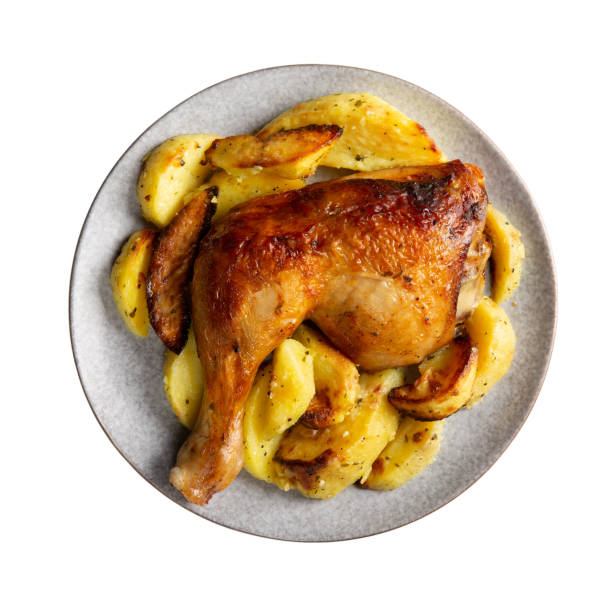

Home
Receta Asado

Pollo con patatas al horno.
Vamos a preparar un pollo asado en el horno con patatas, un plato para conquistar a todo el que se siente a la mesa. Con nuestra receta, la carne queda tierna, la piel crujiente y las patatas recogen todo el sabor del asado convirtiéndose en la guarnición perfecta.
Ingredientes:
- 4 patatas medianas
- Sal, aceite de oliva
- 4 contramuslos
- 200 ml de vino blanco
- Media cebolla
Pasos a seguir:
- Pelamos, lavamos y cortamos en rodajas las patatas
- Las salpimentamos, las ponemos sobre una bandeja de horno engrasada y añadimos la cebolla y los ajos
- Salpimentamos las piezas de pollo
- Ponemos el pollo sobre la cama de patatas, vertemos el vino y añadimos el romero
- Asamos el pollo con las patatas 45 minutos a 200 ºC y giramos las piezas
- Devolvemos el pollo al horno para hornearlo otros 45 minutos y servimos